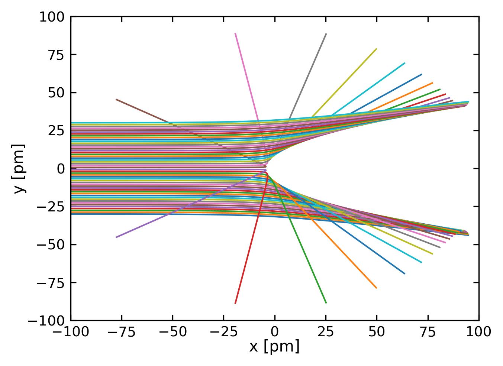
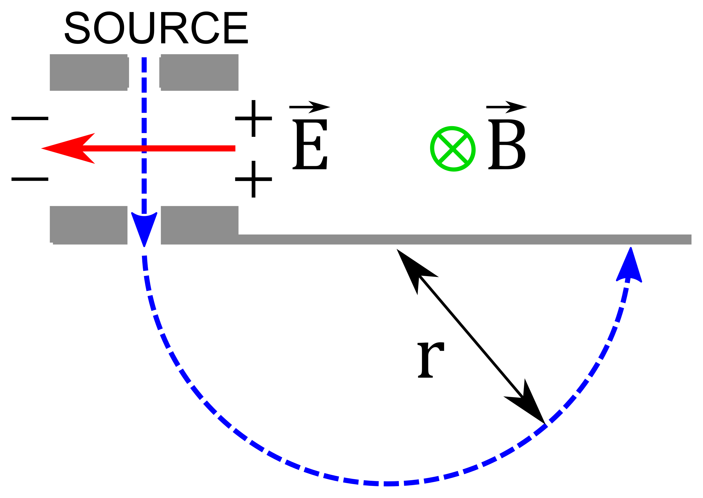
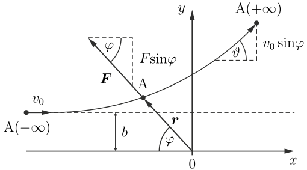
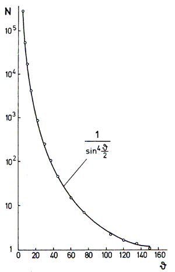
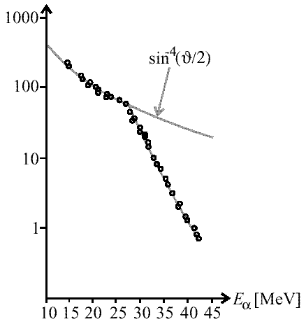
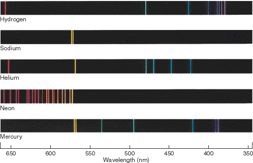

35 The Structure of Matter - Historical Experiments
Building upon our study of electromagnetic waves and classical mechanics, we now turn to the fundamental structure of matter itself. Our journey will follow three key discoveries among many others that revolutionized physics: First, we will examine evidence showing that matter is composed of discrete atoms and that atoms contain charged particles, based on groundbreaking 19th century experiments. Second, we will see how phenomena like the photoelectric effect revealed that light behaves not just as waves, but also as particles called photons. Third, we will explore how matter itself exhibits wave-like properties, leading to the Schrödinger equation and the foundations of quantum mechanics.
This exploration begins with the historical experiments that first proved the existence of atoms. We will examine Dalton’s law of chemical combinations and Gay-Lussac’s law of gaseous reactions, before investigating the internal structure of atoms through Thomson’s and Rutherford’s seminal experiments.
The concept of matter being composed of indivisible particles dates back to ancient Greece. The philosophers Leucippus and Democritus (5th century BCE) first proposed that all matter consists of infinitesimally small, space-filling particles that differ in size and shape. They argued that the properties of macroscopic objects arise from the arrangement of these fundamental particles, which they named “\(\alpha \tau o \mu o \zeta\)” (atoms) meaning “indivisible.” A century later, Epicurus* advanced this atomic theory by proposing that these particles also possessed mass, adding to their spatial properties.
35.1 Atoms and molecules
35.1.1 Dalton’s law
Based on precise quantitative analyses of chemical reactions, John Dalton published “A New System of Chemical Philosophy” in 1808, establishing three key postulates:
- All chemical elements are composed of indivisible atomic particles
- Atoms of the same element are identical in all properties, while atoms of different elements have different properties
- Chemical compounds form when atoms combine in simple whole-number ratios
Example: Formation of Water \((H_2O)\)
Let’s look at the formation of water \((H_2O)\) as a classic example of Dalton’s law:
- Hydrogen \((H)\) atoms and Oxygen \((O)\) atoms combine in a fixed \(2:1\) ratio
- Two hydrogen atoms always combine with one oxygen atom to form one water molecule
- This ratio never varies - you’ll never find water molecules with three hydrogen atoms or two oxygen atoms
This demonstrates Dalton’s three key postulates because:
- The hydrogen and oxygen atoms are indivisible units
- Each hydrogen atom is identical to every other hydrogen atom, and each oxygen atom is identical to every other oxygen atom
- They combine in a simple whole-number ratio \((2:1)\)
Chemical equation: \[2H + O \rightarrow H_2O\]
This consistent \(2:1\) ratio holds true whether you’re making one molecule of water or a gallon of it - it’s a fundamental principle that demonstrates Dalton’s law of definite proportions.
35.1.2 The law of Gay-Lussac
In 1805, building upon Dalton’s atomic theory, Joseph Louis Gay-Lussac and Alexander von Humboldt discovered that hydrogen and oxygen at equal pressure and temperature combine to form water in a precise volume ratio of 2:1. This observation led Gay-Lussac to a more general law: when gases react at equal pressure and temperature, they do so in simple, whole-number volume ratios. This discovery provided further evidence for Dalton’s atomic theory, as these integer ratios suggested that gases must be composed of discrete particles combining in simple proportions.
Example: Formation of Water from Hydrogen and Oxygen Gases
Let’s examine how hydrogen and oxygen gases combine to form water vapor:
- \(2\) volumes of hydrogen gas \((H_2) + 1\) volume of oxygen gas \((O_2) \rightarrow 2\) volumes of water vapor \((H_2O)\)
- At equal temperature and pressure:
- If you start with \(2L\) of hydrogen gas
- And \(1L\) of oxygen gas
- You’ll get \(2L\) of water vapor
This perfectly demonstrates Gay-Lussac’s law because:
- The gases combine in simple, whole-number ratios \((2:1)\)
- The relationship holds true regardless of the actual volumes used (as long as they maintain the ratio)
- The reaction must occur at the same temperature and pressure
Chemical equation: \[2H_2 + O_2 \rightarrow 2H_2O\]
If you were to scale this up or down, the ratio would remain constant. For example: \[ \begin{aligned} 4L\: H_2 + 2L\: O_2 &\rightarrow 4L\: H_2O \\ 6L\: H_2 + 3L\: O_2 &\rightarrow 6L\: H_2O \end{aligned} \]
35.1.3 The Avogadro number
In 1811 Amedeo Avogadro introduced the term “molecule” as the smallest particle of a gas that retains the characteristics of that gas. He hypothesized that at identical pressure and temperature, equal volumes of different gases contain the same number of molecules. This fundamental insight laid the groundwork for connecting molecular-scale properties to macroscopic measurements. The Avogadro number (\(N_{\mbox{A}} = 6.022 \cdot 10^{23} \mbox{ mol}^{-1}\)) serves as a crucial bridge between these scales - it allows us to relate the mass of individual atoms and molecules to measurable quantities like grams, and connect microscopic properties like molecular energies to macroscopic properties like temperature and pressure. From these relationships emerged the concept of “molar volume” - the volume occupied by 1 mol of a gas at standard conditions (\(p = 1013\mbox{ hPa}, T = 0 \mbox{ °C}\)), where the mass in grams corresponds to the molecular weight of the gas molecules. The modern, general definition of 1 mol is the number of particles that corresponds to 12 g of carbon \({}^{12}\mbox{C}\), which applies to both gaseous and non-gaseous substances. The molar volume is \(V_{\mathrm{M}} = 22.414\mbox{ l}\).
Without the Avogadro number, we would be unable to quantitatively connect the behavior of individual particles to the bulk properties we can measure in the laboratory, making it one of the most important constants bridging quantum and classical physics.
Oil spot experiment
One simple and pratical method to determine the Avogadro number is the oil spot experiment. A small drop of oil with known volume \(V\) spreads on a water surface to form a thin film of thickness \(h\) equal to one molecule’s diameter. If \(A\) is the area of the circular film, then:
\(h = \frac{V}{A}\)
Since we know the oil’s density \(\rho\) and molar mass \(M\), we can calculate the number of molecules in the drop:
\(N = \frac{\rho V}{M} N_A\)
The volume of one molecule is:
\(v = \frac{V}{N} = \frac{M}{\rho N_A}\)
Since the thickness \(h\) equals the diameter of one molecule, we can write:
\(h^3 = \frac{6M}{\pi \rho N_A}\)
Solving for \(N_A\):
\(N_A = \frac{6M}{\pi \rho h^3}\)
Using oleic acid (\(\mathrm{C_{18}H_{34}O_2}\)), this method typically yields results within an order of magnitude of the accepted value.
Other Experimental Methods for Determining Avogadro’s Number
35.1.4 Millikan Oil Drop Experiment
The Millikan oil drop experiment measures elementary electric charge \((e)\) and uses Faraday’s constant \((F)\) to calculate Avogadro’s number through the relationship: \[N_A = F/e\]
35.1.5 X-ray Crystallography
This method determines atomic spacing in crystals and combines density measurements with molar mass. The calculation uses density \((\rho)\), unit cell volume \((V_{unit})\), molar mass \((M)\), and number of atoms per unit cell \((n_{atoms})\): \[N_A = \frac{\rho V_{unit}}{M} \times n_{atoms}\]
35.1.6 Brownian Motion
Einstein’s analysis of Brownian motion relates particle movement to Avogadro’s number using temperature \((T)\), gas constant \((R)\), viscosity \((\eta)\), particle radius \((r)\), and diffusion coefficient \((D)\): \[N_A = \frac{RT}{6\pi\eta rD}\]
35.1.7 Black Body Radiation
This approach uses the relationship between the gas constant \((R)\) and Boltzmann constant \((k_B)\): \[N_A = \frac{R}{k_B}\]
Modern measurements typically combine multiple methods for increased accuracy, with the current accepted value being approximately \(6.022 \times 10^{23}\) mol\(^{-1}\).
These experimental findings and concepts paved the way for the modern understanding that matter is generally composed of atoms.
35.2 The Structure of atoms
35.2.1 Indication of charged particles within atoms
At the end of the 19th century experimental findings accumulated indicating matter bears charged particles. The main results were:
- Experiments on electrolytic current demonstrated that molecules can dissociate, whereas the resulting ions migrate in opposite directions and transport charges and mass.
- Gas discharging phenomena are influenced through electric and magnetic fields. Thus, discharging is correlated to motion of charged particles.
- Magnetic phenomena arise from electric conduction in metals and semiconductors.
- \(\alpha\) and \(\beta\) radiation are deflected through magnetic fields; \(\alpha\) and \(\beta\) particles are positively charged,
heavy particles and negatively charged, light particles, respectively. Consequently the concept of matter being composed of atoms was extended. Atoms in turn consist of positively and negatively charged particles which bear mass and charge.
Johann Wilhelm Hittorf observed in gas discharge tubes that particles emitted from a cathode propagate in straight lines. Moreover, these particles can be deflected with the aid of a magnet. As a consequence of the emission from the cathode and the direction of the magnetic poles, these particles had to be negatively charged. Later in 1897, Joseph John Thomson determined the charge-to-mass ratio \(e/m\) and demonstrated that this ratio is independent of the cathode material. In contrast to charged particles emitted from the cathode, Eugen Goldstein observed in 1886 a ray emitted from the anode which is propagating in the opposite direction than the cathode ray. In 1887 Wilhelm Wien reported from a \(10^{-4}\) reduced charge-to-mass ratio of this anode ray and concluded that these particles are charged gas ions.
In 1899 Thomson and Charles Wilson studied sinking droplets of condensed water vapor. The speed of falling was depending on the size of the droplets and the viscosity of the retarding gas. While measuring the amount of water and charges Thomson and Wilson were able to estimate the elementary charge of about \(10^{-19} \mbox{ C}\). In 1910 Robert Andrews Millikan refined this approach with his famous oil drop experiment. He sprayed tiny oil droplets into a chamber between two horizontal metal plates that could be charged to create an electric field. The droplets became electrically charged through friction and X-ray ionization. By carefully adjusting the electric field strength, Millikan could balance the gravitational force with the electromagnetic force, causing droplets to hover in place. By measuring the voltage needed to suspend droplets of different sizes, and accounting for air resistance, he discovered that the charges always occurred in discrete multiples of what we now know as the elementary charge: \(e = 1.602\cdot 10^{-19} \mbox{ C}\).
Charge-to-Mass Ratio (Q/m)
The charge-to-mass ratio \((Q/m)\) of an object is the charge divided by the mass of the same object. This quantity is generally useful only for objects that may be treated as particles. For extended objects, total charge, charge density, total mass, and mass density are often more useful.
The charge to mass ratio can be measured in an experiment where a charged particle is accelerated by an electric field and deflected by a magnetic field. The ratio of the electric field strength to the magnetic field strength is equal to the charge-to-mass ratio of the particle.

This method was used by Thomson to determine the charge-to-mass ratio of the electron and is still used today in modern experiments to measure the charge-to-mass ratio of particles with the help of mass spectrometers.
35.2.2 Derivation
Starting from the equality of magnetic and centripetal forces:
\[qvB = m\frac{v^2}{r}\]
This can be rearranged to:
\[\frac{q}{m} = \frac{v}{Br}\]
Since electric and magnetic forces are equal:
\[F_{electric} = F_{magnetic}\] \[Eq = Bqv\]
This gives us:
\[v = \frac{E}{B}\]
Combining these equations yields:
\[\frac{q}{m} = \frac{E}{B^2r}\]
where:
- \(q\) is charge
- \(m\) is mass
- \(v\) is velocity
- \(B\) is magnetic field strength
- \(r\) is radius of circular path
- \(E\) is electric field strength
Concerning the mass of an electron, its value is still only accessible via the charge-to-mass ratio. A precise measurement of the \(e/m\) ratio is possible with a Wien filter. To do so, an electron is accelerated by means of a voltage, whereas perpendicular to the propagation direction an electric field deflects the electron beam. In addition a magnetic field is used to compensate the deflection. Thus, the \(e/m\) ratio depends only on the applied accelerating voltage and the electric and magnetic fields.
35.2.3 The Thomson model
At the beginning of the 20th century only negatively charged electrons as cathode rays and positively charged \(\alpha\) particles were available for scattering experiments. However, if \(\alpha\) particles are scattered at atoms, the electrons will have only a minor effect. The scattering depends for the most part on the spatial arrangement of positive charges within the atoms.
As a first attempt, in 1904 Thomson proposed the “Plum Pudding Model”. According to this model every atom consists of a number of \(Z\) electrons with a cumulative charge of \(-Z\cdot e\) and a number of \(Z\) positive charges. Thus, the atoms appear neutral on the macroscopic scale. This model aligned with Paul Drude’s earlier theory of electrical conduction in metals (1900), which treated electrons as a freely moving “gas” within a positive background charge - essentially applying Thomson’s atomic model to bulk materials. Both models shared the concept of mobile electrons moving through a positively charged background.

Indication of a not-sufficient description is provided on the basis of simple calculations. If the \(Z\) electrons are equally distributed within a sphere with the radius \(R\) the electron density would measure \[ n_e = \frac{Z}{\frac{4}{3}\pi R^3} \]
Then, the plasma frequency would result in
\[ \omega_p = \sqrt{\frac{n_e \cdot e^2}{\epsilon_0 \cdot m_e}} = \sqrt{\frac{3 Z e^2}{4 \pi \epsilon_0 R^3 m_e}} \]
This plasma frequency equation, derived from the uniform electron distribution in Thomson’s model, would predict specific absorption and emission frequencies. However, these predicted frequencies did not match the sharp spectral lines observed experimentally in atomic spectra, indicating a fundamental flaw in Thomson’s model.
35.2.4 The Rutherford Model
In 1908, Rutherford, Geiger, and Marsden began their famous scattering experiments of α particles (helium nuclei) on extremely thin gold foil, only a few atoms thick. Using a new, turnable apparatus, they were able to detect scattering angles up to 180°. The surprising observation that approximately 1 in 8000 α particles was scattered at large angles directly contradicted Thomson’s plum pudding model, which predicted only small-angle deflections. The fact that most particles passed straight through the foil indicated that atoms are mostly empty space.
In 1911, Rutherford therefore proposed a new atomic model: all positive charge and most of the mass must be concentrated in a tiny volume (later called the nucleus) at the center of the atom, with electrons orbiting around it. Using this model, Rutherford derived the scattering formula for α particles, which successfully described the experimental data. The Rutherford scattering formula is based on the Coulomb force between the α particle and the nucleus, and it provides the differential cross section for scattering at a given angle.
To look into the scattering experiment we would like to define some basic quantity, the differential scattering cross section, which is not only important for the Rutherford scattering but also for other scattering experiments. The differential cross section means geometrically:
- Particles with impact parameters between \(b\) and \(b + db\) form a ring of area \(d\sigma = 2\pi b db\)
- These particles are scattered into a ring on a sphere of radius \(R\) with area \(dA = 2\pi R^2sin(\theta)d\theta\)
- The solid angle is \(d\Omega = dA/R^2 = 2\pi sin(\theta)d\theta\)
The differential cross section is defined as: \[ \frac{d\sigma}{d\Omega} = \frac{b\,db}{sin(\theta)d\theta} \]
which can be rewritten as: \[ \frac{d\sigma}{d\Omega} = \frac{b}{\sin(\theta)}\frac{db}{d\theta} \]
The key physical insight is that particles hitting the target within a ring of radius \(b\) and width \(db\) are scattered into a corresponding angular range \(d\theta\), and the cross section describes this relationship. As the scattering process involves the interaction potential between the particle and the target, the differential cross section provides a quantitative measure of the scattering process and the interaction between the particles.
Differential cross section and interaction potential
For a central potential \(V(r)\), we can use conservation laws. The energy conservation gives:
\[ E = \frac{1}{2}\mu v^2 + V(r) \]
And the angular momentum conservation yields:
\[ L = \mu r^2\dot{\phi} = \mu v b \]
as we used in Rutherford scattering.
The scattering angle \(\vartheta\) can be expressed through an integral formula:
\[ \vartheta = \pi - 2\int_{r_{min}}^{\infty} \frac{b\,dr}{r^2\sqrt{1-\frac{b^2}{r^2}-\frac{2V(r)}{E}}} \]
where \(r_{min}\) is the distance of closest approach.
This relates the impact parameter b to the scattering angle \(\vartheta\). For the Coulomb potential \(V(r) = \frac{kqQ}{r}\), this gives us the Rutherford result.
The general relation for the differential cross section remains:
\[ \frac{d\sigma}{d\Omega} = \frac{b}{\sin\vartheta}\frac{db}{d\vartheta} \]
Different potentials \(V(r)\) will lead to different \(b(\vartheta)\) relations and thus different angular dependencies of the cross section.
Rutherford scattering
We consider the scattering of a charged particle in a Coulomb potential. The force between a particle A and the scattering center B is:
\[ F = \frac{q\,Q}{4\pi\varepsilon_0\,r^2} = \frac{a}{r^2} \]
where \(q\) is the charge of the particle and \(Q\) the charge of the scattering center.

In the center of mass frame the angular momentum is:
\[ L =\mu r^2 \frac{\mathrm d \varphi}{\mathrm dt} = \mu r v \sin\varphi\stackrel{(r\rightarrow-\infty)}{=} \mu v_0 b \tag{35.1}\]
with the reduced mass \(\mu=m_1 m_2/(m_1+m_2)\). The particle is deflected by the force in \(y\)-direction:
\[ F_y = \frac{a\,\sin\varphi}{r^2} = \mu \frac{\mathrm d v_y}{\mathrm d t} \]
With Equation eq-angular-momentum we get:
\[ \frac{\mathrm d v_y}{\mathrm d t} = \frac{a\,\sin\varphi}{\mu v_0 b} \frac{\mathrm d\varphi}{\mathrm d t} \]
To get the total deflection \(\vartheta\) we need to integrate from \(\mathrm A(-\infty)\) to \(\mathrm A(+\infty)\):
\[ \begin{aligned} \int\limits_{0}^{v_0 \sin\vartheta} \mathrm d v_y &= \frac{a}{\mu v_0 b} \int\limits_{0}^{\pi - \vartheta} \sin \varphi \; \mathrm d\varphi\\ v_0 \sin \vartheta &= \frac{a}{\mu v_0 b} \left(1 + \cos\vartheta \right) \end{aligned} \]
Using \((1 + \cos\vartheta) / \sin\vartheta = 1/(\tan(\vartheta/2))\) we find:
\[ b = \frac{a}{\mu v_0^2} \frac{1}{\tan(\vartheta/2)} \tag{35.2}\]
From this, we can now calculate the differential cross section
\[ \frac{\mathrm d\sigma}{\mathrm d\Omega} = \frac{b}{\sin\vartheta}\frac{\mathrm db}{\mathrm d\vartheta} \]
Using \(\sin\vartheta=2\sin(\vartheta/2)\cos(\vartheta/2)\) we can rewrite Equation eq-deflection as follows:
\[ \frac{b}{\sin\vartheta} = \frac{1}{2}\frac{a}{\mu v_0^2}\frac{1}{\sin^2(\vartheta/2)} \]
The derivative of Equation eq-deflection with respect to \(\vartheta\) gives:
\[ \frac{\mathrm db}{\mathrm d\vartheta} = \frac{1}{2}\frac{a}{\mu v_0^2}\frac{1}{\sin^2(\vartheta/2)} \]
Thus, for the differential cross section we get:
\[ \frac{\mathrm d\sigma}{\mathrm d\Omega} = \frac{1}{4}\left(\frac{a}{\mu v_0^2}\right)^2\frac{1}{\sin^4(\vartheta/2)} = \frac{1}{4}\left(\frac{q\,Q}{4\pi\varepsilon_0\,\mu v_0^2}\right)^2\frac{1}{\sin^4(\vartheta/2)} \]
which is the Rutherford scattering formula. This formula successfully described the experimental data except at very large angles (small impact parameters), where deviations indicated that nuclei, while much smaller than atoms (< \(10^{-14}\) m), are not point-like. This groundbreaking experiment established the nuclear model of the atom and provided the first evidence for nuclear structure.
In an experiment, one would send \(\alpha\) particles from a source to a thin gold foil. The \(\alpha\) particles are scattered at the gold atoms and detected by a detector. The detector is placed at a distance \(R\) from the foil. The detector is often a scintillation counter or a photographic plate. In a scintillation counter, the \(\alpha\) particles hit a scintillator, which emits light when hit by a charged particle. The light is detected by a photomultiplier tube, which converts the light into an electrical signal. The signal is then processed and counted by a computer. The number of scattered particles is counted as a function of the scattering angle \(\vartheta\). The Rutherford scattering formula describes the angular distribution of the scattered particles.
To quantitatively describe the scattering in terms of detected counts on a detector, we need to consider the following quantities:
- \(\dot{N} \cdot A\): number of particles per unit time hitting area \(A\) of scattering volume \(V\)
- \(\Delta \dot{N}(\vartheta, \Omega)\): number of particles per unit time scattered into solid angle \(\Delta \Omega\) around angle \(\vartheta\)
The fraction of scattered particles is given by:
\[ \frac{\Delta \dot{N}}{\dot{N} \cdot A} = n_B \; \Delta x \; \frac{\mathrm{d} \sigma}{\mathrm{d} \Omega} \; \Delta \Omega \]
where \(n_B\) is the density of scattering centers, \(\Delta x\) is the scattering path length, and \(\frac{\mathrm{d} \sigma}{\mathrm{d} \Omega}\) is the differential scattering cross section.
The detector area at distance \(R\) is:
\[ \Delta A_D = R^2 \sin \left( \vartheta \right) \; \Delta \Omega \]
Using the differential scattering cross section:
\[ \frac{\mathrm{d}\sigma}{\mathrm{d}\Omega} = b \cdot \frac{\mathrm{d}b}{\mathrm{d}\vartheta} \frac{1}{\sin \left( \vartheta \right)} \]
and calculating \(\frac{\mathrm{d}b}{\mathrm{d}\vartheta}\), we obtain the Rutherford scattering formula:
\[ \frac{\Delta \dot{N}}{\dot{N} \cdot A} = n_{\mathrm{Gold}} \; \Delta x \; \frac{1}{4 R^2} \; \left( \frac{qQ}{8 \pi \epsilon_0 E_{\mathrm{kin}}} \right)^2 \; \frac{\Delta A_{\mathrm{d}}}{\sin^4 \left( \frac{\vartheta}{2} \right)} \]
35.2.5 Experimental verification


35.3 Rutherford Scattering Trajectories
The graph below shows the calculated Rutherford scattering trajectories for \(\alpha\) particles scattered by a gold atom. The trajectories are calculated for different impact parameters \(b\) and show the deflection of the \(\alpha\) particles as they pass the gold atom using the above described forces.
35.4 Spectroscopic Evidence
The development of optical tools like spectroscopy has provided further evidence for the inner structure of atoms. Of particular importance are the observation of sharp spectral lines in atomic emission and absorption spectra which seem to be a fingerprint of the atom’s inner structure.
The image below shows the emission spectra of a number of basic elements revealing the characteristic spectral lines.

These lines have to be explained with models that also comply with the structure of the atoms that is determined by scattering experiments. The Bohr model, which will be discussed in on of the next lectures, was the first model that could explain the spectral lines of hydrogen. It was based on the Rutherford model and the quantization of angular momentum.